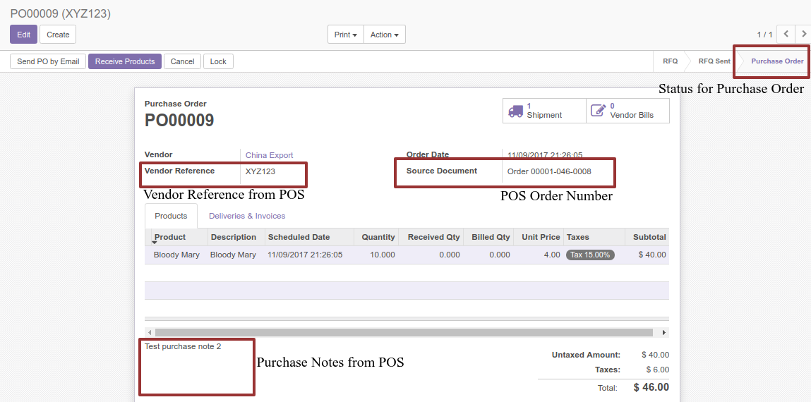

Create Purchase Order Workflow
Create Purchase Order workflow is exactly the same with Create Purchase Quotation workflow.


The only difference is the created Purchase Order will be in Purchase Order status or the purchase quotation has been confirmed already.